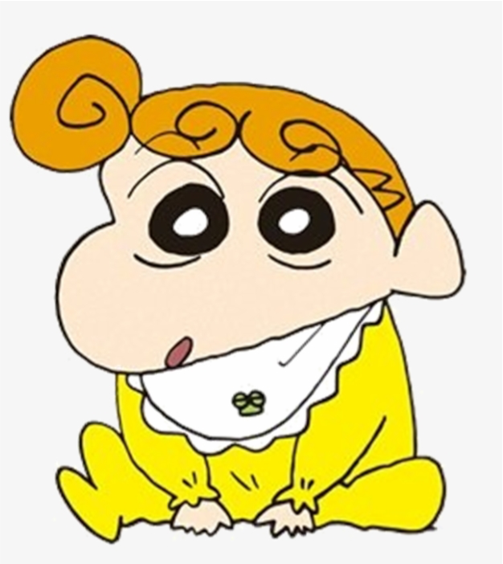

05/04/2025, 17:16 Shinchan - Homepage
Shinchan: Shiro and the Coal Town Game Characters Who's your favorite?
Available on: Nintendo Switch and Windows PC
 Shinnosuke Nohara (Shinchan) The mischievous 5-year-old protagonist known for his hilarious antics and love of choco chips. |
 Misae Nohara (Mom) Shinchan's short-tempered but loving mother, always trying to keep him in line. |
 Hiroshi Nohara (Dad) The laid-back father who works at a company and enjoys his evening beer. |
|
 Himawari (Sister) The youngest of the Noharas. Loves shiny objects and brandname goods. Smiles sideways, like Shinchan. |
 Yukino Nohara (Shiro) The family dog — small, fluffy, and sometimes the most sensible member of the household. |
 Toru Kazama The smart and responsible friend of Shinchan, often the voice of reason in the group. |